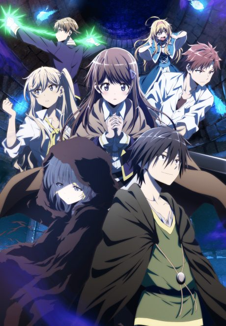

Uncle from Another World
異世界おじさん
After the anime, read the manga from Chapter 34.
7.6AniList score
—Animeter, no votes yet
13episodes
Anime finished. Where does the manga pick up?
Start at Chapter34
The anime ends at chapter 33 (the end of volume 6), so start at chapter 34, the first chapter of volume 7. The manga is still ongoing.
133ongoing
Season 1Start reading here
More like Uncle from Another World
 Manga Vol. 58.1
Manga Vol. 58.1
 Manga Ch. 1117.2
Manga Ch. 1117.2
 Not checked5.9
Not checked5.9
 Novel7.9
Novel7.9

Not checked6.5 Manga Vol. 47.7
Manga Vol. 47.7